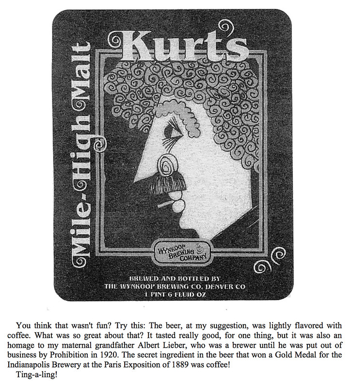
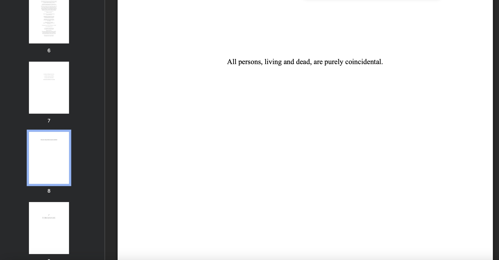

september 6, 2026
Writing Tings!
Ting-a-ling!

I am not a writer. I am not a reader. However, every now and then I read and write. Here, I am hoping to write down what I have read. I recently read Timequake by Vonnegut. Vonnegut is the best of company. Just as we keep time we keep company. I recommend Vonnegut to those who have lost much kept company and time.
I cannot remember what inspired me to read Timequake Sunday morning a few weeks back, but Vonnegut calls every now and again. I'd encourage you to pickup every Timequake.
Anywho, I am not a writer so I cannot capture the surprise I felt when Vonnegut ends up at Wynkoop brewing in Denver. Vonnegut was in town for an art show. Wynkoop was started by one of my dad's good friends Russell Scherer. He was the head brewer. I imagine Russ would have loved to meet Kurt. I immediately called my dad to tell him I met Vonnegut at Wynkoop. He was unaware of Timequakes. He hasn't read much Vonnegut. My dad confirmed Russ would have had passed before Kurt's visit.
"At the daybreak that followed the opening of Joe Petro III's and my show in Denver, a Sunday, I awoke alone in a room in the oldest hotel there, the Oxford. I knew where I was and how I had gotten there. It wasn't as though I had been drunk as a hooty-owl on Grandfather's beer the night before. I dressed and stepped outside. Nobody else I could see was up yet. There were no moving vehicles. If free will had chosen to kick in again at that moment, and I had been off balance and so fallen down, nobody would have run over me. "
I have stood outside the Oxford hotel in not a dissimilar spot as Vonnegut a time or two.
There is not much more to say here outside of the wish that I hope coincidences find us all more often. Ting-a-ling!

To be continued ...